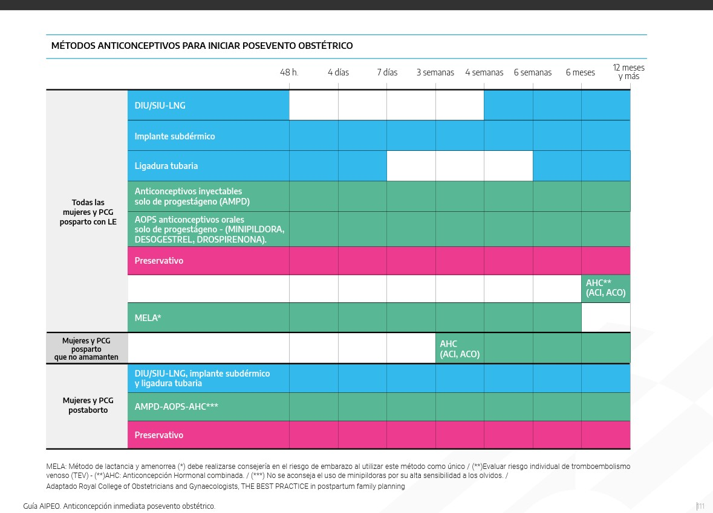

Referencias Rápidas
MELA: Método de lactancia y amenorrea.
AHC: Anticoncepción Hormonal Combinada.
(*) Nota de seguridad: Se debe realizar consejería sobre el riesgo de embarazo al utilizar MELA como método único.
Guía de referencia rápida para profesionales de la salud
MELA: Método de lactancia y amenorrea.
AHC: Anticoncepción Hormonal Combinada.
(*) Nota de seguridad: Se debe realizar consejería sobre el riesgo de embarazo al utilizar MELA como método único.